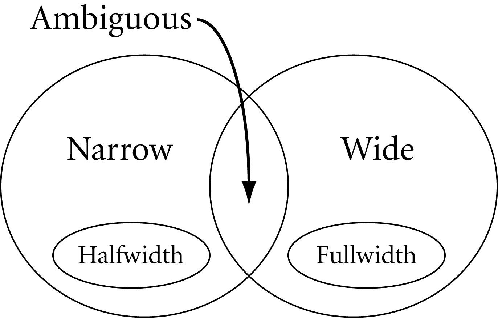
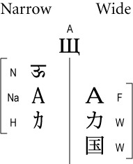
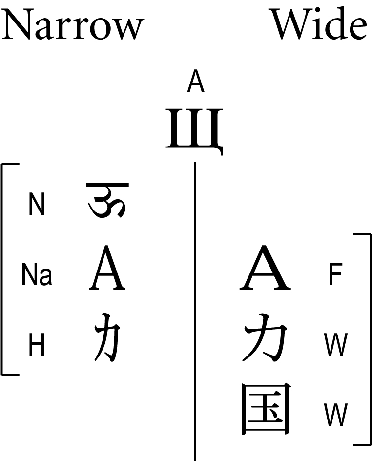

Unicode Standard Annex #11
East Asian Width
| Version | Unicode 6.1.0 |
| Editor | Asmus Freytag (asmus@unicode.org) |
| Date | 2012-01-17 |
| This Version | http://www.unicode.org/reports/tr11/tr11-23.html |
| Previous Version | http://www.unicode.org/reports/tr11/tr11-21.html |
| Latest Version | http://www.unicode.org/reports/tr11/ |
| Latest Proposed Update | http://www.unicode.org/reports/tr11/proposed.html |
| Revision | 23 |
Summary
This annex presents the specifications of an informative property for Unicode characters that is useful when interoperating with East Asian Legacy character sets.
Status
This document has been reviewed by Unicode members and other interested parties, and has been approved for publication by the Unicode Consortium. This is a stable document and may be used as reference material or cited as a normative reference by other specifications.
A Unicode Standard Annex (UAX) forms an integral part of the Unicode Standard, but is published online as a separate document. The Unicode Standard may require conformance to normative content in a Unicode Standard Annex, if so specified in the Conformance chapter of that version of the Unicode Standard. The version number of a UAX document corresponds to the version of the Unicode Standard of which it forms a part.
Please submit corrigenda and other comments with the online reporting form [Feedback]. Related information that is useful in understanding this annex is found in Unicode Standard Annex #41, “Common References for Unicode Standard Annexes.” For the latest version of the Unicode Standard, see [Unicode]. For a list of current Unicode Technical Reports, see [Reports]. For more information about versions of the Unicode Standard, see [Versions]. For any errata which may apply to this annex, see [Errata].
Contents
- 1 Overview
- 2 Scope
- 3 Description
- 4 Definitions
- 5 Recommendations
- 6 Classifications
- References
- Acknowledgments
- Modifications
1 Overview
When dealing with East Asian text, there is the concept of an inherent width of a character. This width takes on either of two values: narrow or wide. For traditional mixed-width East Asian legacy character sets, this classification into narrow and wide corresponds with few exceptions directly to the storage size for each character: a few narrow characters use a single byte per character and all other characters (usually wide) use two or more bytes.
Layout and line breaking (to cite only two examples) in East Asian context show systematic variations depending on the value of this East_Asian_Width property. Wide characters behave like ideographs; they tend to allow line breaks after each character and remain upright in vertical text layout. Narrow characters are kept together in words or runs that are rotated sideways in vertical text layout.
For a traditional East Asian fixed pitch font, this width translates to a display width of either one half or a whole unit width. A common name for this unit width is “Em”. While an Em is customarily the height of the letter “M”, it is the same as the unit width in East Asian fonts, because in these fonts the standard character cell is square. In contrast, the character width for a fixed-pitch Latin font like Courier is generally 3/5 of an Em.
In modern practice, most alphabetic characters are rendered by variable-width fonts using narrow characters, even if their encoding in common legacy sets uses multiple bytes.
Except for a few characters, which are explicitly called out as fullwidth or halfwidth in the Unicode Standard, characters are not duplicated based on distinction in width. Some characters, such as the ideographs, are always wide; others are always narrow; and some can be narrow or wide, depending on the context. The Unicode character property East_Asian_Width provides a default classification of characters, which an implementation can use to decide at runtime whether to treat a character as narrow or wide.
The East_Asian_Width property does not preserve canonical equivalence, because the base characters of canonical decompositions almost always have a different East_Asian_Width than the precomposed characters. Decomposing a character, and applying the East_Asian_Width to a base character and combining marks separately does not yield the expected values. For examples, see Section 4, Definitions.
2 Scope
The East_Asian_Width is an informative property and provides a useful concept for implementations that
- Have to interwork with East Asian legacy character encodings
- Support both East Asian and Western typography and line layout
- Need to associate fonts with unmarked text runs containing East Asian characters
This annex gives general guidelines how to use this property. It does not provide rules or specifications of how this property might be used in font design or line layout, because, while a useful property for this purpose, it is only one of several character properties that would need to be considered. While the specific assignments of property values for given characters may change over time, it is generally not intended to reflect evolving practice for existing characters. In particular some alphabetic and symbol characters are treated as wide in certain East Asian legacy character set implementations, and as narrow in all other cases. Instead, the guidelines on use of this property should be considered recommendations based on a particular legacy practice that may be overridden by implementations as necessary.
3 Description
By convention, 1/2 Em wide characters of East Asian legacy encodings are called “halfwidth” (or hankaku characters in Japanese); the others are called correspondingly “fullwidth” (or zenkaku) characters. Legacy encodings often use a single byte for the halfwidth characters and two bytes for the fullwidth characters. In the Unicode Standard, no such distinction is made, but understanding the distinction is often necessary when interchanging data with legacy systems, especially when fixed-size buffers are involved.
Some character blocks in the compatibility zone contain characters that are explicitly marked “halfwidth” and “fullwidth” in their character name, but for all other characters the width property must be implicitly derived. Some characters behave differently in an East Asian context than in a non-East Asian context. Their default width property is considered ambiguous and needs to be resolved into an actual width property based on context.
The Unicode Character Database [UCD] assigns to each Unicode character as its default width property one of six values: Ambiguous, Fullwidth, Halfwidth, Narrow, Wide, or Neutral (= Not East Asian). For any given operation, these six default property values resolve into only two property values, narrow and wide, depending on context.
4 Definitions
- All terms not defined here shall be as defined elsewhere in the Unicode Standard.
ED1. East_Asian_Width: In the context of interoperating with East Asian legacy character encodings and implementing East Asian typography, East_Asian_Width is a categorization of character. It can take on two abstract values, narrow and wide.
In legacy implementations, there is often a corresponding difference in encoding length (one or two bytes) as well as a difference in displayed width. However, the actual display width of a glyph is given by the font and may be further adjusted by layout. An important class of fixed-width legacy fonts contains glyphs of just two widths, with the wider glyphs twice as wide as the narrower glyphs.
Note: For convenience, the classification further distinguishes between explicitly and implicitly wide and narrow characters.
ED2. East Asian Fullwidth (F): All characters that are defined as Fullwidth in the Unicode Standard [Unicode] by having a compatibility decomposition of type <wide> to characters elsewhere in the Unicode Standard that are implicitly narrow but unmarked.
Note: The Unicode property value aliases drop the common prefix East Asian for this and the following property values.
ED3. East Asian Halfwidth (H): All characters that are explicitly defined as Halfwidth in the Unicode Standard by having a compatibility decomposition of type <narrow> to characters elsewhere in the Unicode Standard that are implicitly wide but unmarked, plus the WON SIGN.
ED4. East Asian Wide (W): All other characters that are always wide. These characters occur only in the context of East Asian typography where they are wide characters (such as the Unified Han Ideographs or Squared Katakana Symbols). This category includes characters that have explicit halfwidth counterparts.
ED5. East Asian Narrow (Na): All other characters that are always narrow and have explicit fullwidth or wide counterparts. These characters are implicitly narrow in East Asian typography and legacy character sets because they have explicit fullwidth or wide counterparts. All of ASCII is an example of East Asian Narrow characters.
It is useful to distinguish characters explicitly defined as halfwidth from other narrow characters. In particular, halfwidth punctuation behaves in some important ways like ideographic punctuation, and knowing a character is a halfwidth character can aid in font selection when binding a font to unstyled text.
ED6. East Asian Ambiguous (A): All characters that can be sometimes wide and sometimes narrow. Ambiguous characters require additional information not contained in the character code to further resolve their width.
Ambiguous characters occur in East Asian legacy character sets as wide characters, but as narrow (i.e., normal-width) characters in non-East Asian usage. (Examples are the basic Greek and Cyrillic alphabet found in East Asian character sets, but also some of the mathematical symbols.) Private-use characters are considered ambiguous by default, because additional information is required to know whether they should be treated as wide or narrow.
Figure 1. Venn Diagram Showing the Set Relations for Five of the Six Categories


When they are treated as wide characters, ambiguous characters would typically be rendered upright in vertical text runs.
Because East Asian legacy character sets do not always include complete case pairs of Latin characters, two members of a case pair may have different East_Asian_Width properties:
Ambiguous: 01D4 LATIN SMALL LETTER U WITH CARON NEA Neutral: 01D3 LATIN CAPITAL LETTER U WITH CARONCanonical equivalents of ambiguous characters may not be ambiguous themselves. For example, the angstrom sign is Ambiguous, while its decomposition, latin capital letter a with ring, is Neutral.
ED7. Neutral (Not East Asian): All other characters. Neutral characters do not occur in legacy East Asian character sets. By extension, they also do not occur in East Asian typography. For example, there is no traditional Japanese way of typesetting Devanagari. Canonical equivalents of narrow and neutral characters may not themselves be narrow or neutral respectively. For example, the character latin capital letter a with ring is Neutral, but its decomposition starts with a Narrow character.
Strictly speaking, it makes no sense to talk of narrow and wide for neutral characters, but because for all practical purposes they behave like Na, they are treated as narrow characters (the same as Na) under the recommendations below.
In a broad sense, wide characters include W, F, and A (when in East Asian context), and narrow characters include N, Na, H, and A (when not in East Asian context).
Figure 2. Examples for Each Character Class and Their Resolved Widths


4.1 Relation to the Terms “Fullwidth” and “Halfwidth”
When converting a DBCS mixed-width encoding to and from Unicode, the fullwidth characters in such a mixed-width encoding are mapped to the fullwidth compatibility characters in the FFxx block, whereas the corresponding halfwidth characters are mapped to ordinary Unicode characters (for example, ASCII in U+0021..U+007E, plus a few other scattered characters).
In the context of interoperability with DBCS character encodings, this restricted set of Unicode characters in the General Scripts area can be construed as halfwidth, rather than fullwidth. (This applies only to the restricted set of characters that can be paired with the fullwidth compatibility characters.)
In the context of interoperability with DBCS character encodings, all other Unicode characters that are not explicitly marked as halfwidth can be construed as fullwidth.
In any other context, Unicode characters not explicitly marked as being either fullwidth or halfwidth compatibility forms are neither halfwidth nor fullwidth.
Seen in this light, the “halfwidth” and “fullwidth” properties are not unitary character properties in the same sense as “space” or “combining” or “alphabetic.” They are, instead, relational properties of a pair of characters, one of which is explicitly encoded as a halfwidth or fullwidth form for compatibility in mapping to DBCS mixed-width character encodings.
What is “fullwidth” by default today could in theory become “halfwidth” tomorrow by the introduction of another character on the SBCS part of a mixed-width code page somewhere, requiring the introduction of another fullwidth compatibility character to complete the mapping. However, because the single byte part of mixed-width character sets is limited, there are not going to be many candidates and neither the Unicode Technical Committee [UTC] nor WG2 has any intention to encode additional compatibility characters for this purpose.
4.2 Ambiguous Characters
Ambiguous width characters are all those characters that can occur as fullwidth characters in any of a number of East Asian legacy character encodings. They have a “resolved” width of either narrow or wide depending on the context of their use. If they are not used in the context of the specific legacy encoding to which they belong, their width resolves to narrow. Otherwise, it resolves to fullwidth or halfwidth. The term context as used here includes extra information such as explicit markup, knowledge of the source code page, font information, or language and script identification. For example:
- Greek characters resolve to narrow when used with a standard Greek font, because there is no East Asian legacy context.
- Private-use character codes and the replacement character have ambiguous width, because they may stand in for characters of any width.
- Ambiguous quotation marks are generally resolved to wide when they enclose and are adjacent to a wide character, and to narrow otherwise.
The East_Asian_Width property does not preserve canonical equivalence, because the base characters of canonical decompositions almost always have a different East_Asian_Width than the precomposed characters. East Asian Width is designed for use with legacy character sets so the property value is not designed to respect canonical equivalence.
Modern Rendering Practice. Modern practice is evolving toward rendering ever more of the ambiguous characters with proportionally spaced, narrow forms that rotate with the direction of writing, making a distinction within the legacy character set. In other words, context information beyond the choice of font or source character set is employed to resolve the width of the character. This annex does not attempt to track such changes in practice; therefore, the set of characters with mappings to legacy character sets that have been assigned ambiguous width constitute a superset of the set of such characters that may be rendered as wide characters in a given context. In particular, an application might find it useful to treat characters from alphabetic scripts as narrow by default. Conversely, many of the symbols in the Unicode Standard have no mappings to legacy character sets, yet they may be rendered as “wide” characters if they appear in an East Asian context. An implementation might therefore elect to treat them as ambiguous even though they are classified as neutral here.
5 Recommendations
When mapping Unicode to East Asian legacy character encodings
- Wide Unicode characters always map to fullwidth characters.
- Narrow (and neutral) Unicode characters always map to halfwidth characters.
- Halfwidth Unicode characters always map to halfwidth characters.
- Ambiguous Unicode characters always map to fullwidth characters.
When mapping Unicode to non-East Asian legacy character encodings
- Wide Unicode characters do not map to non-East Asian legacy character encodings.
- Narrow (and neutral) Unicode characters always map to regular (narrow) characters.
- Halfwidth Unicode characters do not map.
- Ambiguous Unicode characters always map to regular (narrow) characters.
When processing or displaying data
- Wide characters behave like ideographs in important ways, such as layout. Except for certain punctuation characters, they are not rotated when appearing in vertical text runs. In fixed-pitch fonts, they take up one Em of space.
- Halfwidth characters behave like ideographs in some ways, however, they are rotated like narrow characters when appearing in vertical text runs. In fixed-pitch fonts, they take up 1/2 Em of space.
- Narrow characters behave like Western characters, for example, in line breaking. They are rotated sideways, when appearing in vertical text. In fixed-pitch East Asian fonts, they take up 1/2 Em of space, but in rendering, a non-East Asian, proportional font is often substituted.
- Ambiguous characters behave like wide or narrow characters depending on the context (language tag, script identification, associated font, source of data, or explicit markup; all can provide the context). If the context cannot be established reliably, they should be treated as narrow characters by default.
6 Classifications
The classifications presented here are based on the most widely used mixed-width legacy character sets in use in East Asia as of this writing. In particular, the assignments of the Neutral or Ambiguous categories depend on the contents of these character sets. For example, an implementation that knows a priori that it needs to interchange data only with the Japanese Shift-JIS character set, but not with other East Asian character sets, could reduce the number of characters in the Ambiguous classification to those actually encoded in Shift-JIS. Alternatively, such a reduction could be done implicitly at runtime in the context of interoperating with Shift-JIS fonts or data sources. Conversely, if additional character sets are created and widely adopted for legacy purposes, more characters would need to be classified as ambiguous.
6.1 Unassigned and Private-Use Characters
All private-use characters are by default classified as Ambiguous, because their definition depends on context.
Unassigned code points in ranges intended for CJK ideographs are classified as Wide. Those ranges are:
- the CJK Unified Ideographs block, 4E00..9FFF
- the CJK Unified Ideographs Externsion A block, 3400..4DBF
- the CJK Compatibility Ideographs block, F900..FAFF
- the Supplementary Ideographic Plane, 20000..2FFFF
- the Tertiary Ideographic Plane, 30000..3FFFF
All other unassigned code points are by default classified as Neutral.
For additional recommendations for handling the default property value for unassigned characters, see Section 5.3, Unknown and Missing Characters, in [Unicode].
6.2 Combining Marks
Combining marks have been classified and are given a property assignment based on their typical applicability. For example, combining marks typically applied to characters of class N, Na, or W are classified as A. Combining marks for purely non-East Asian scripts are marked as N, and nonspacing marks used only with wide characters are given a W. Even more so than for other characters, the East_Asian_Width property for combining marks is not the same as their display width.
In particular, nonspacing marks do not possess actual advance width. Therefore, even when displaying combining marks, the East_Asian_Width property cannot be related to the advance width of these characters. However, it can be useful in determining the encoding length in a legacy encoding, or the choice of font for the range of characters including that nonspacing mark. The width of the glyph image of a nonspacing mark should always be chosen as the appropriate one for the width of the base character.
6.3 Data File
The East_Asian_Width classification of all Unicode characters is listed in the file EastAsianWidth.txt [Data11] in the Unicode Character Database [UCD]. This is a tab-delimited, two-column, plain text file, with code position and East_Asian_Width designator. A comment at the end of each line indicates the character name. Ideographic, Hangul, Surrogate, and Private Use ranges are collapsed by giving a range in the first column.
6.4 Adding Characters
As more characters are added to the Unicode Standard, or if additional character sets are created and widely adopted for legacy purposes, the assignment of East_Asian_Width may be changed for some characters. Implementations should not make any assumptions to the contrary. The sets of Narrow, Fullwidth, and Halfwidth characters are fixed for all practical purposes. New characters for most scripts will be Neutral characters; however, characters for East Asian scripts using wide characters will be classified as Wide. Symbol characters that are, or are expected to be, used both as wide characters in East Asian usage and as narrow characters in non-East Asian usage will be classified Ambiguous.
References
For references for this annex, see Unicode Standard Annex #41, “Common References for Unicode Standard Annexes.”
Acknowledgments
Asmus Freytag is the author of the initial version and has added to and maintained the text of this annex.
Michel Suignard provided extensive input into the analysis and source material for the detail assignments of these properties. Mark Davis and Ken Whistler performed consistency checks on the data files at various times. Tomohiro Kubota reviewed the East_Asian_Width assignments against some common legacy encodings.
Modifications
For details of the change history, see the online copy of this annex at http://www.unicode.org/reports/tr11/.
The following summarizes modifications from the previous revision of this annex.
Revision 23:
- Reissued for Unicode 6.1.0.
Revision 22 being a proposed update, only changes between revisions 21 and 23 are noted here.
Revision 21:
- Reissued for Unicode 6.0.0.
Revision 20 being a proposed update, only changes between revisions 19 and 21 are noted here.
Revision 19:
- Reissued for Unicode 5.2.0
- Updated the description of the property value for unassigned code points
Revision 18 being a proposed update, only changes between revisions 17 and 19 are noted here.
Revision 17:
- Reissued for Unicode 5.1.0
- Added a note on lack of canonical equivalence for the definition of ambiguous characters.
Revision 16 being a proposed update, only changes between versions 17 and 15 are noted here.
Revision 15:
- Reissued without change in content for 5.0.0, except for redrawing the figures.
- Changed references to use common references.
- Updated headers and boilerplate texts as required.
- Removed Section 5.
Revision 14:
- Reissued without change in content for 4.1.0, except minor typographical corrections.
- Updated references and links, in particular to new version of data file.
- Updated headers and boilerplate texts as required.
Revision 13:
- Further clarified the definition of ambiguous width. Migrated some formatting to stylesheet.
Revision 11:
- Extended the range for the default wide property value to 30000–3FFFD.
Revision 10:
- Reworded the definitions of F and H to explicitly refer to the compatibility decomposition.
- Changed 3000 from W to F, to align with the revised definitions. Extended the definition for Na to include all characters that have a wide equivalent, whether F or W.
- Changed 2329..232A, 3008..3009, and 301A..301B from A to W to reflect the addition of 27E6..27EB which are their Na equivalents.
- Also changed 3018..3019 from A to W to reflect their intended use as CJK-only punctuation.
- Changed 2155 and 2574 from A to N, as they were mistaken entries.
- Changed 24C0..24CF and 2776..277F from N to A to reflect their treatment in practice. Revised sections 2, 4.2 and 6.
Revision 9:
- Updated links to new version of data file.
- Changed 00AE, 014B, 02C4,
02DF, 2022, 2024, 203E, 2116, 2153, 215C..215D, 21B8..21B9, 21E7and 273D from
N
to A . This is a result of a recent review of existing mapping tables
showing their use as wide characters in widely implemented East Asian legacy
encodings.
[Revision 9 was never published].
Revision 8:
- Change in header for Unicode 3.1.
- New status section and new format for references.
- Properties assigned to the new characters added to Unicode 3.1.
- Changed 2329..232A and 3008-3009 from N to A and W to A respectively. This is a result of their canonical equivalence.
Revision 7:
- Change in header for Unicode 3.0.1, change in file versioning format.
Version 6.0:
- Restated the definitions so that the wording more clearly reflects the intent.
- No changes to the assignments of properties to any character were made.
- Added a section on classifying characters that are to be added to the standard in the future. Also added Figure 2.
Version 5.0:
- Changed the spelling of the title and made minor clarifying changes to the definitions and the description of ambiguous characters and combining marks.
- As result of the Unicode 3.0 beta process, changed some CJK punctuation characters from W to A because they are also used in Western mathematical notation.
- Removed some historic information and made other edits to prepare TR for publication as part of Unicode 3.0.
Copyright © 2000-2012 Unicode, Inc. All Rights Reserved. The Unicode Consortium makes no expressed or implied warranty of any kind, and assumes no liability for errors or omissions. No liability is assumed for incidental and consequential damages in connection with or arising out of the use of the information or programs contained or accompanying this technical report. The Unicode Terms of Use apply.
Unicode and the Unicode logo are trademarks of Unicode, Inc., and are registered in some jurisdictions.